50pick · 50pick.tz · where a market comes from, how it is resolved,
how the money moves, and what the player sees. Every screenshot and every figure in this document
was taken from the live platform, as the role named in its caption.
A market is one YES/NO question with a public source, a written criterion and a deadline. Players back a side; the two stakes form one pool; when the question is answered an officer seals the verdict and the pool pays the winning side. Nobody sets odds — the price you see is the crowd's own money, and the payout is arithmetic on the pool.
50pick separates seeing a page from using a control on it. Both
are enforced on the server, so a screen that hides a button is not the security boundary — it is the
courtesy. The table is the live mapping, read from roles.ts and
control-gates.ts.
| Action | Needs | Where |
|---|---|---|
| Create / edit a market | Trading | Curation queue → New market |
| Generate an AI poll · review · publish | Trading | AI poll generation |
| Approve or decline a player proposal | Growth | Player proposals |
| Edit the proposal prize economics | Accounting | Player proposals |
| Approve a source domain | Trading | Sources & categories |
| Resolve YES / NO / VOID | Trading | Resolver queue |
| “Re-check this market now” (one paid AI call) | Compliance | Resolver queue |
| Turn two-admin authorization on or off | Compliance | Resolver queue header |
| Emergency-void a LIVE market | Compliance | Curation queue |
| Settle a resolved market by hand | Accounting | Settlement |
| Rule on an objection | Compliance | Objections |
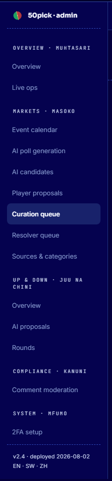
There are four doors, and they all end in the same place — a row in the curation queue. Only the first is fully manual.
| Door | What it is |
|---|---|
| New market | You write the question. Four steps, below. |
| AI poll generation | The AI drafts a question with a source and a criterion; an officer reviews it and publishes. It never goes live unreviewed. |
| Player proposals | A player suggests a market. Approving one pays them a bonus, which is why approval is a growth control. |
| AI candidates | Ideas harvested from the event calendar, waiting to be promoted into drafts. |
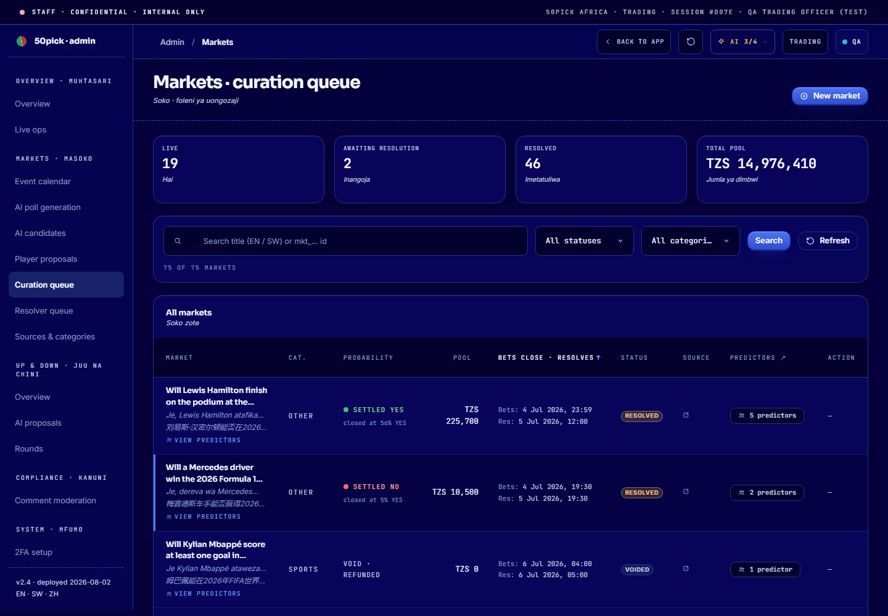
Title in English, and optionally Swahili and Chinese. Then the category.
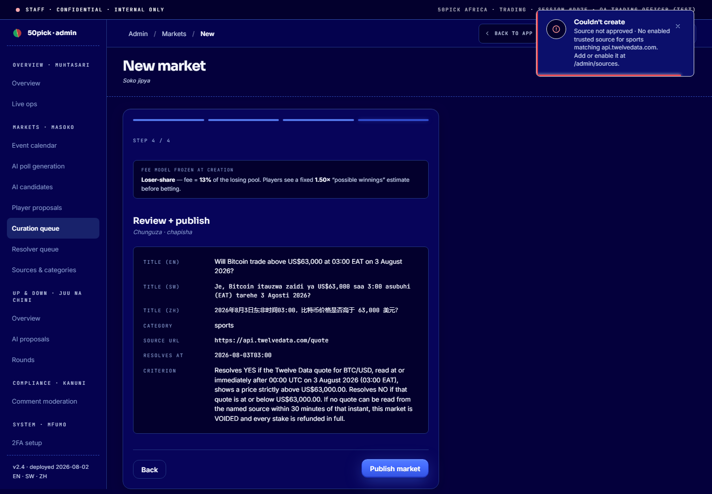
crypto, not
sports.A public URL that both officers and players will resolve against, and the resolution timestamp.
Africa/Dar_es_Salaam. Type the time you mean locally;
03:00 on the form became 00:00 UTC in the database, verified on the market
created for this guide.At least 30 characters, and this is the text a resolver and a player are both held to. Write it so that two people reading it separately reach the same verdict.
Everything on one card before it goes live. The banner above it states the fee model that will be frozen into this market at creation and cannot change afterwards, even if the platform's rates change tomorrow.
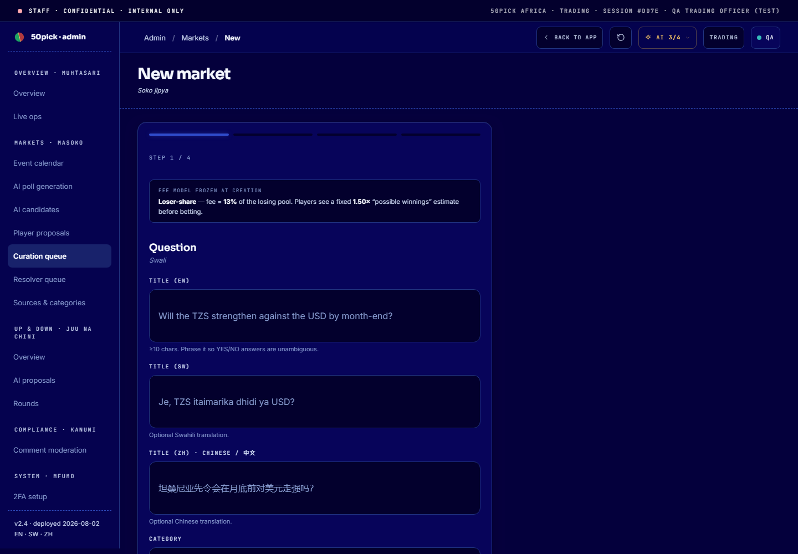
These are the platform's live settings. They are frozen into each market when it is created.
| Setting | Live value | What it means |
|---|---|---|
| Fee model | loser-share | The fee comes out of the losing pool. Winners are never charged. |
| Commission | 13% | Of the pool — but capped, see below. |
| Fee ceiling | 33.3% | Of the smaller side. The fee is the LOWER of the two. |
| Minimum stake | TZS 500 | Per bet. |
| Maximum stake | TZS 1,000,000 | Per bet. |
| Free exit | 5 minutes | Cash out free within 5 minutes of placing. |
| Cash-out fee | 0% | After the free window. |
| Two-admin authorization | off | One officer resolves in one action. |
fee = min(13% × pool, 33.3% × smaller side) makes that impossible. On a one-sided market
there is no losing side at all, so the fee is nothing and every stake is refunded in full.A market appears here when its resolution time passes. Read the card top to bottom: how late it is, how much player money it is holding, which way the crowd went, and then the three verdicts.
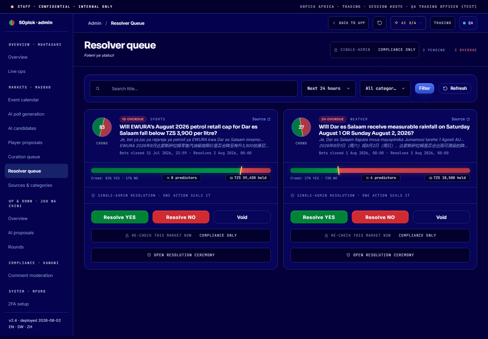
| What you see | What it means |
|---|---|
1D OVERDUE | How long past its resolution time. It scales its own unit — minutes, hours, days, weeks. The longer it waits the bigger the number gets, not smaller. |
TZS 59,450 held | Real player money frozen in this pool until you act. This is the number that should decide what you pick up first. |
| The crowd dial + bar | How the money is split. It is information, not evidence — resolve against the source, never against the crowd. |
Source ↗ | The URL this market must be resolved from. |
| Verdict | What happens to the money |
|---|---|
| Resolve YES / NO | The winning side splits the whole pool less the capped fee. Losing stakes are gone. |
| Void | Every stake is refunded in full, both sides, no fee. Use it when the question cannot be answered from its own source. |
“Re-check this market now” spends one paid AI call and can seal a verdict, so it stays a compliance decision even though it sits on a trading page. Two-admin authorization is the toggle that restores the classic two-officer ceremony; relaxing it is a compliance control by design. Both appear locked to a trading officer rather than hidden — you can see that they exist and who to ask.
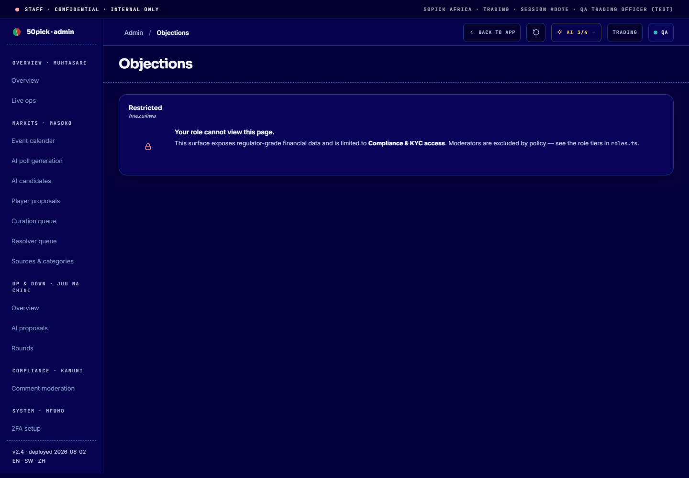
Settlement is normally automatic: when a verdict is sealed, that market gets its own timer set to the close of its objection window and pays itself then, provided no objection stands. This page is the human fallback — settle by hand, or see what an objection is freezing.
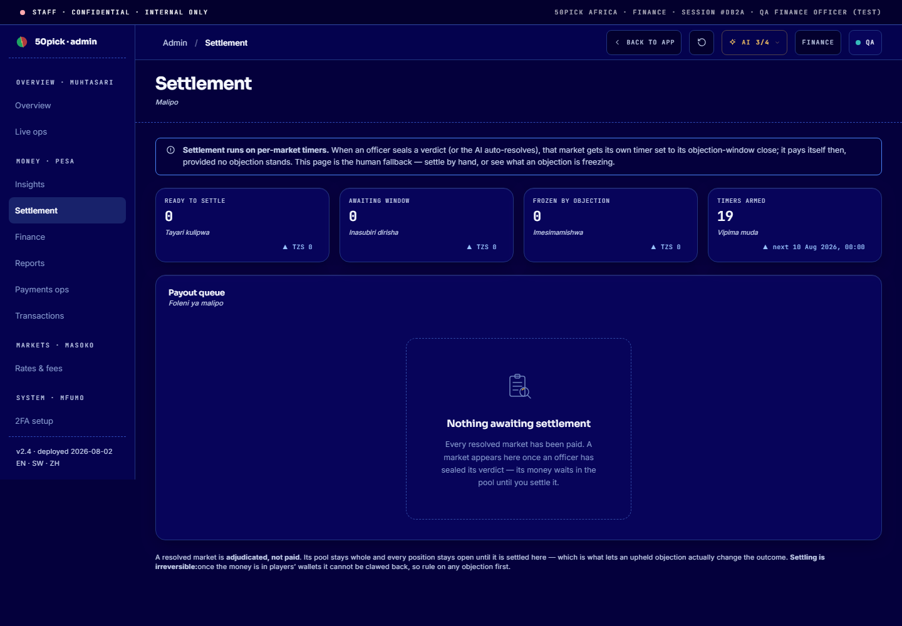
| Counter | What it means |
|---|---|
| Ready to settle | Verdict sealed, objection window closed, waiting to pay. |
| Awaiting window | Sealed, but the objection window is still open. |
| Frozen by objection | Someone has objected. It will not pay until that is ruled on. |
| Timers armed | Markets that will settle themselves, and when the next one fires. |
Compliance officers can view settlement — they hold accounting view — but running a settlement needs accounting act, which only finance and the owner hold. Seeing the page is not being able to fire it.
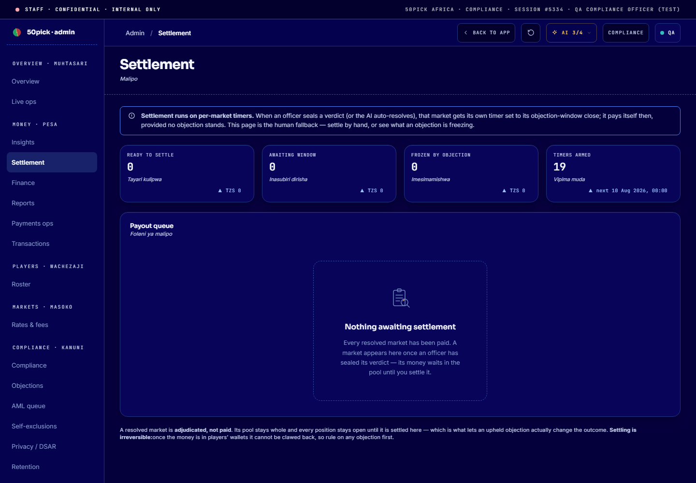
| Situation | What to do |
|---|---|
| The source never published the figure | Void. Everyone gets their stake back. This is the honest answer, not a failure. |
| A LIVE market is wrong or unsafe | Emergency void from the curation queue Compliance. It pulls the market and refunds every open stake. |
| A player disputes a verdict | It appears in Objections Compliance and freezes settlement until ruled on. |
| A market is overdue and holding money | Work the resolver queue by the
TZS … held pill, biggest first. Overdue money is the only truly urgent thing in
this console. |
| Everything looks fine but nothing resolves | Check the AI sentinel — it auto-resolves settled markets on a schedule and can be paused. A paused sentinel means every market waits for a human. |
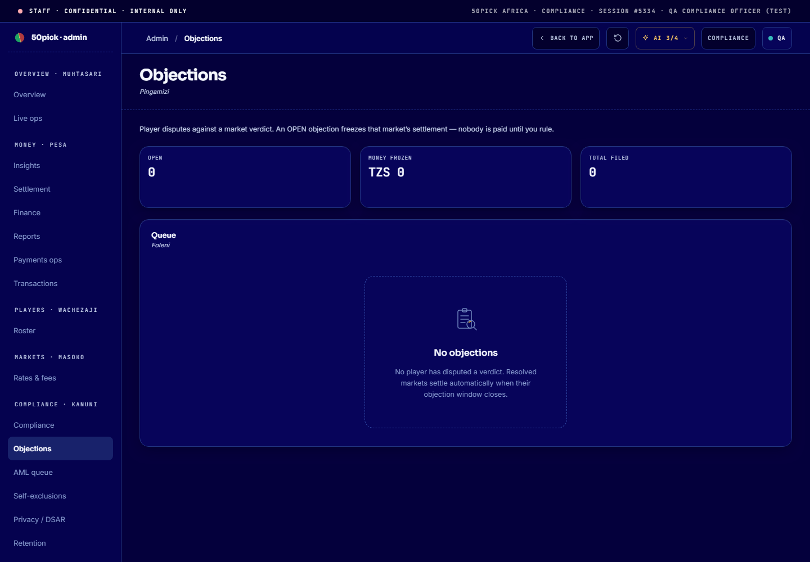
Everything above produces exactly three things for the player: a market they can back, a position they can watch, and a message when it is over.
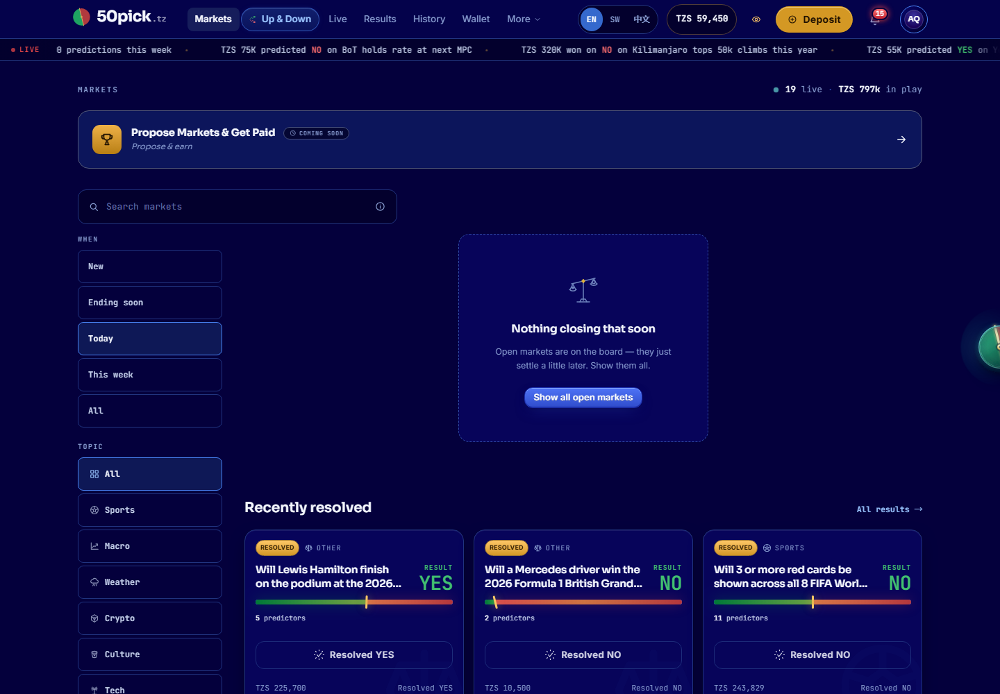
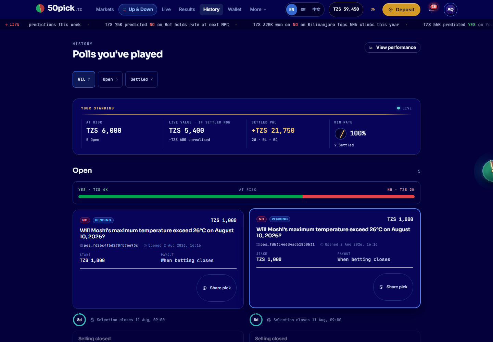
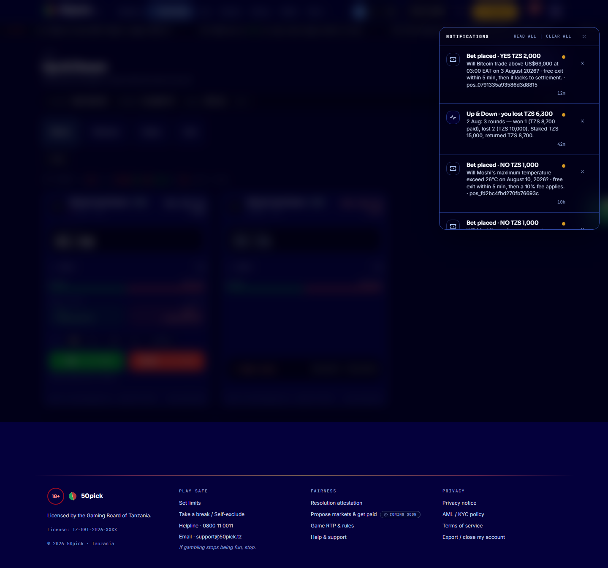
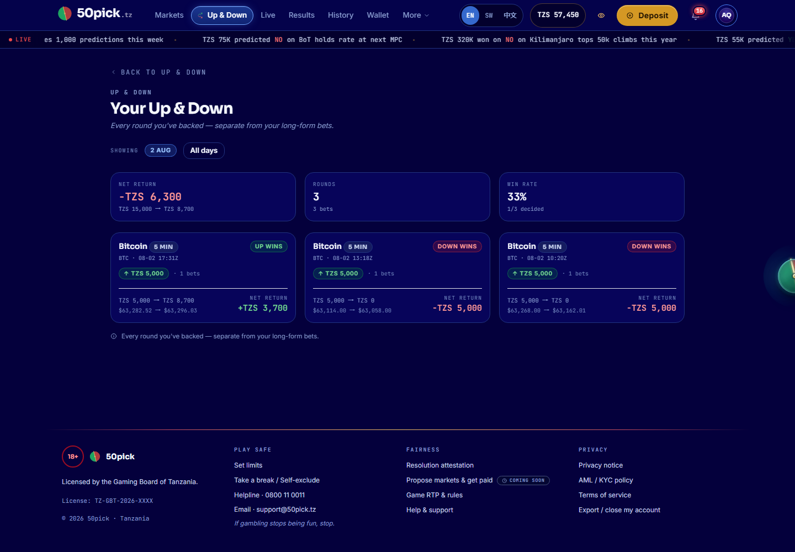
Every figure below is from one real market created on production while writing this runbook.
The first attempt was rejected outright, and correctly: the source domain was approved under
crypto while the form still carried the default category sports. That is
the figure in Part 1. Fixing the category published it in one click.
At the instant the criterion names — 00:00:00 UTC on 3 August 2026 — the platform's own reader was pointed at the market's own declared source:
The ceremony page also carried an independent opinion: the AI sentinel returned YES at 88% confidence, citing Bybit $63,381, CoinGecko $63,254.75, Yahoo $63,043.63 and CoinDesk $63,454.69 — and the platform labelled that recommendation “NOT THE APPROVED SOURCE” in red, because none of those four is the domain this market declared. The two agreed, and the verdict was recorded against the approved one.
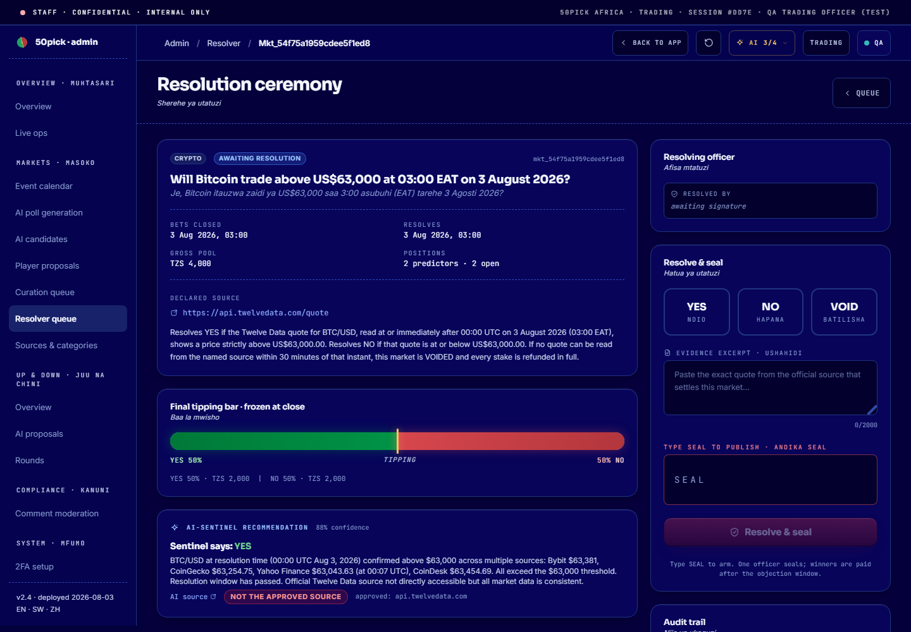
SEAL, seal. The AI's recommendation is offered and flagged, never applied.RESOLVED, outcome YES,
settledAt still null, and both positions still
OPEN with both wallets unchanged. The page said the same thing — objection
window 23h, closes 4 Aug 2026 03:08, payouts are provisional until the 24-hour window elapses.
Do not read “verdict sealed” as “the players were paid”; check the wallet, not the toast.docs/COMPLIANCE-DECISIONS.md (2026-09-05).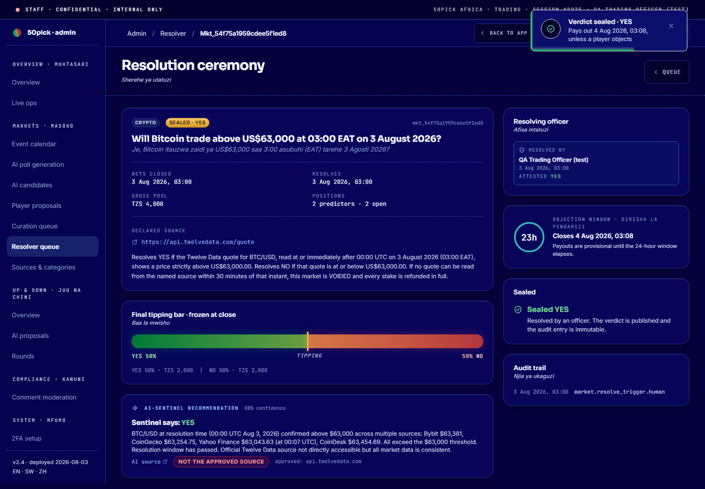
market.resolve_trigger.human.When that window closes with nothing standing, the market settles itself: the YES side takes the
TZS 4,000 pool less the fee, and the NO stake is gone. This market is frozen at the
loser-share fee model, so the fee is a slice of the losing side only —
(3% platform + 10% operator) × the NO pool = 13% × 2,000 =
TZS 260. That leaves a net pool of TZS 3,740, and alpha — the only YES predictor —
receives all of it: TZS 3,740, a profit of TZS 1,740 on a TZS 2,000 stake.
loser-share and
12 at capped-commission — so the model this worked example uses is the
minority case, and guessing gets the majority of the board wrong.
| Model | The fee | On this 2,000 v 2,000 pool | Alpha receives |
|---|---|---|---|
loser-sharefrozen 23 Jul 2026 onward |
(3% + 10%) × the LOSING pooldepends on who won |
13% × 2,000 = TZS 260 | TZS 3,740 |
capped-commissionthe older model, still settling |
min(13% × the whole pool,outcome-neutral |
min(520, 666) = TZS 520 | TZS 3,480 |
feeSnapshot when it was created, whatever admin config says today. An earlier draft of
this page applied the capped-commission formula to this loser-share market
and understated alpha's payout by TZS 260. The market page shown next names the model outright —
that page is the authority, not this one.
npm run test:settlement-expectation now holds this worked example to what the settlement
code actually computes, so the two can no longer drift apart.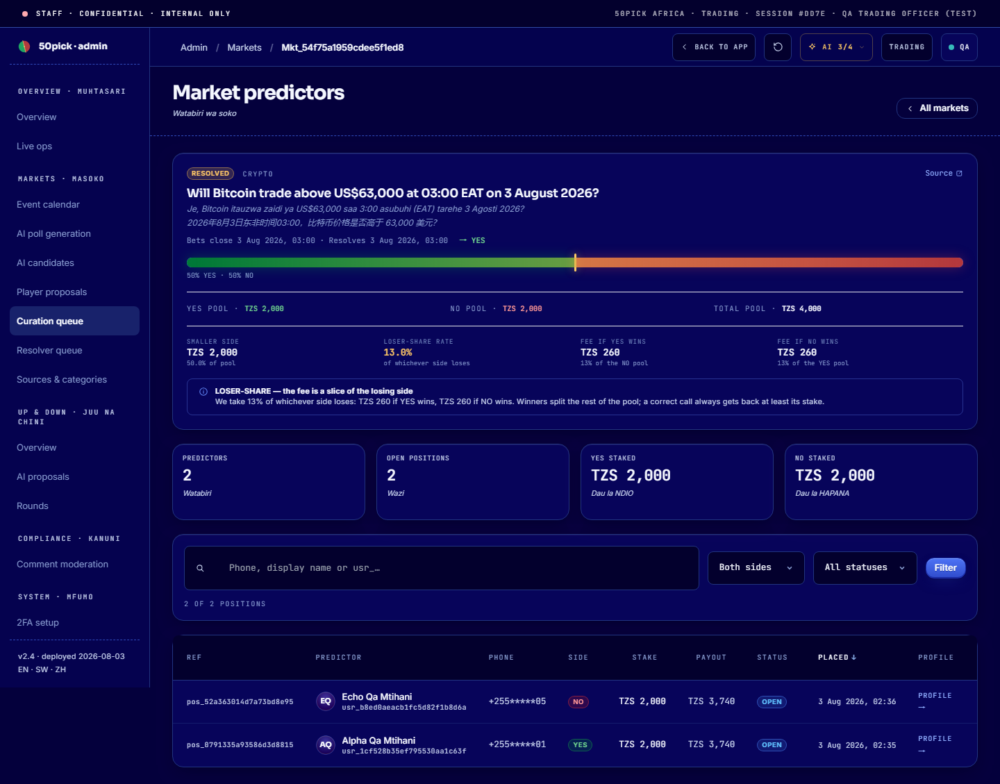
FEE IF YES WINS TZS 260 · FEE IF NO WINS TZS 260 —
because under this model the fee depends on who lost. The predictor grid below it carries each
position's payout. ⚠️ While a market is RESOLVED but not yet settled, that column shows each side's
“if my side wins” figure, so the losing row still reads TZS 3,740; the outcome in the header
(→ YES) is what decides. Settlement replaces it with the amount actually
paid.TZS … held, not by how old the card looks.50pick · Markets admin runbook. Generated from live production. Companion volume:
Up & Down — Operator & Player Runbook. Rebuild with
npm run runbook:markets; re-shoot the figures with
SHOT_DIR=docs/runbooks/markets-assets node scripts/live-markets-guide-shots.mjs.